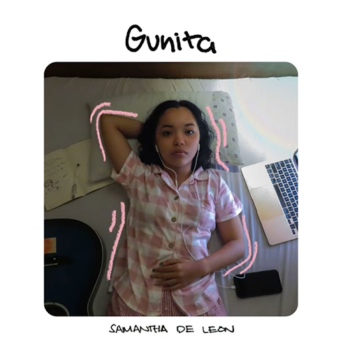
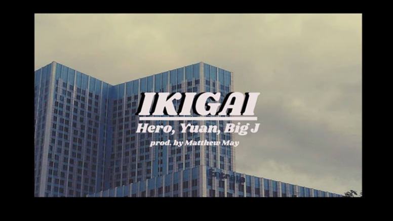
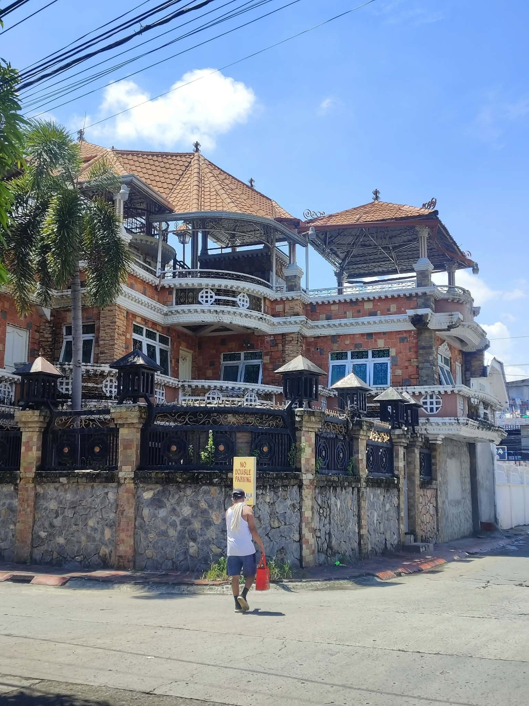
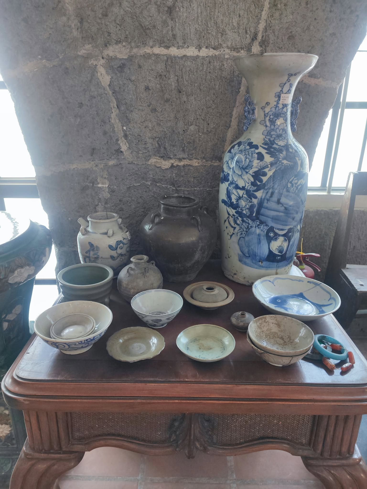
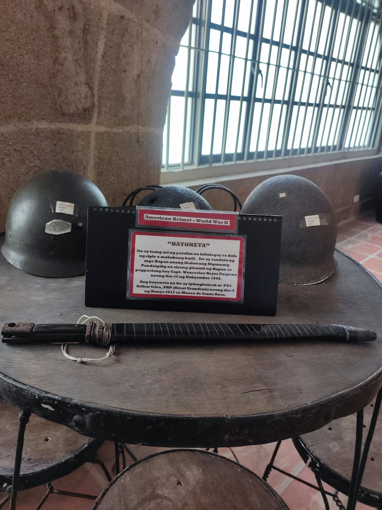
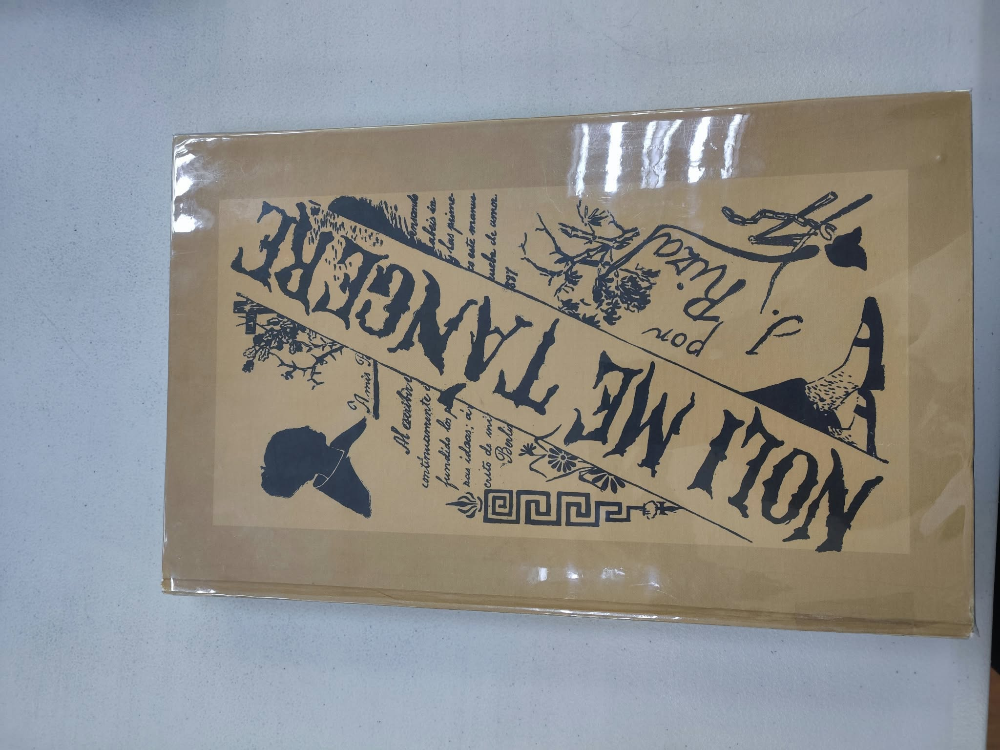
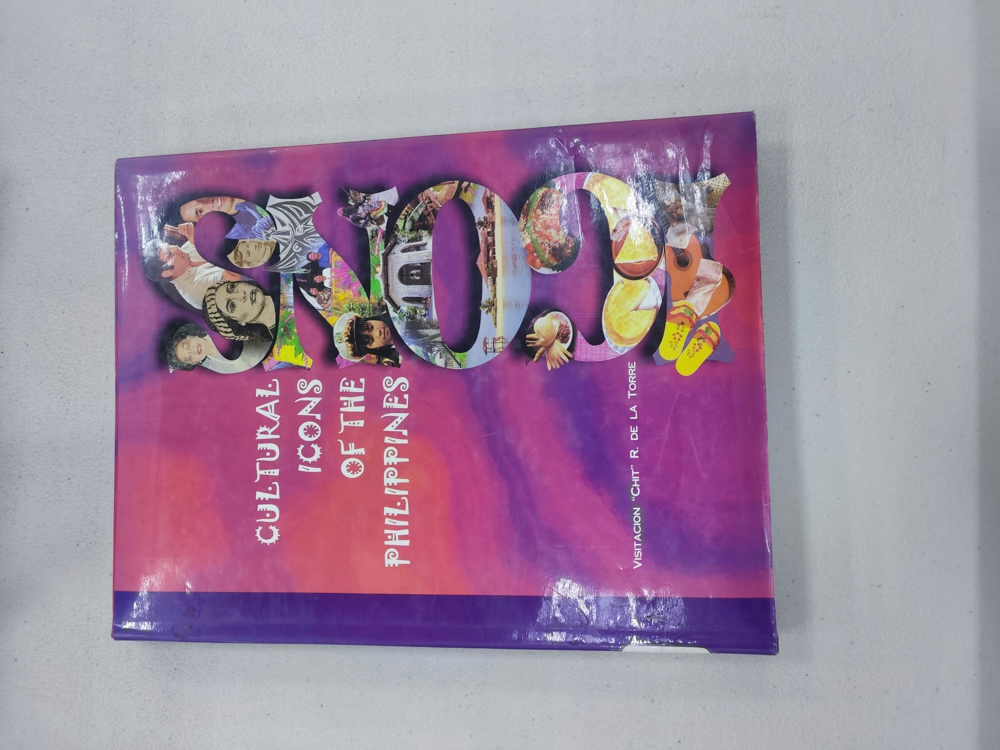

This blog presents different works of art and our appreciation,
understanding, and interpretation of each work.
Our Artworks
Bawat Araw
Artist: Samantha De Leon

Bawat Araw
“Bawat Araw” by Samantha De Leon is a Filipino song with a gentle and intimate musical character. The song is centered on Samantha De Leon's vocals, supported by a simple chord progression and a steady rhythm.
The main subject of “Bawat Araw” is the feeling of continuously caring for or loving someone in everyday life. The title itself suggests that the person being referred to remains important each day, making the song feel personal and sincere. The song can be interpreted as expressing affection, attachment, and appreciation for someone whose presence or memory continues to have an effect on the singer. Because of this, the song is not only about romantic feelings but also about the idea of having someone who remains meaningful in one's life over time.
For us, what makes “Bawat Araw” interesting is how it does not need an overly complicated musical arrangement to create an emotional effect. The moderate rhythm and repeating chord progression allow the vocals to stand out. We also like how the music feels steady and easy to follow, because it gives the song a more personal and relaxed atmosphere. We think the combination of the 100 BPM tempo, simple harmonic progression, and expressive vocals makes the song effective. The music does not overwhelm the listener with too many sounds, so it is easier to focus on the singer and the feeling being communicated. The song gives the impression of something sincere and consistent, which fits well with the idea suggested by its title, “Bawat Araw.”
Ikigai
Artist: Oreh, Yuan, and Big J, produced by Matthew May

Ikigai
“IKIGAI” by Oreh, Yuan, and Big J, produced by Matthew May, is a Filipino romantic song that combines rap-style verses with a repeated melodic chorus. The song focuses on a person who has become an important source of happiness, motivation, and purpose in the singer's life. The three performers express their affection in different ways, while the chorus repeatedly describes the person as their “ikigai,” or someone who gives meaning and motivation to their life. The song has a relaxed and romantic feel, with the vocals and beat working together to create a youthful and affectionate atmosphere.
The lyrics are mainly about love, affection, commitment, and finding happiness in another person. Oreh expresses his desire to stay with the person, saying that he wants to be there as someone she can depend on. Yuan talks about being attracted to someone even though their relationship is still uncertain. Big J expresses a stronger sense of commitment, saying that he wants to stay with the person until they grow old together. The word “ikigai” is used in the song to describe the person as someone who gives the singer a reason to be happy and something meaningful to hold onto. This is especially clear in the lines where the singer says that the person is the reason for his happiness and that his sadness disappears when she is around. The repeated chorus, “hawakan mo aking kamay” and “sabay maglalakbay,” also presents the idea of wanting to face life together.
For us, “IKIGAI” is an enjoyable song because its lyrics are straightforward and easy to understand. We like how the three performers have different verses but maintain the same central idea of expressing affection toward someone. The repeated chorus also makes the song memorable, especially the part about holding hands and traveling together. What stands out to us the most is how the song uses the word “ikigai” to describe someone as an important reason for happiness and motivation. The combination of the romantic lyrics, rap-style verses, and relaxed beat gives the song a youthful and personal feeling. We think the song is effective in communicating its theme because the message remains consistent throughout the verses, chorus, and bridge: being with someone you love can give you happiness, motivation, and a sense of purpose.
Bahay sa Kanto

Bahay sa Kanto
Bahay sa Kanto is a large residential house located on a street corner in San Lorenzo.
According to the local residents who live around it, they have recognized the house since the late 1990s, and it became a familiar landmark in the community, often simply referred to as the “Malaking Bahay sa Kanto.” and uses the house as a point of recognition when describing the area. The house has a prominent brick-colored exterior combined with white decorative details, black metal gates, balconies, and several covered upper areas. Its roof has a reddish-brown tiled appearance, while the balconies feature curved railings and repeated ornamental designs. The house is surrounded by a stone and concrete fence, making it visually noticeable from the street.
For us, Bahay sa Kanto is interesting because its appearance makes it easy to understand why it became a recognizable landmark in the community. What stands out to us the most is the amount of detail in the house. The decorative railings, gates, balconies, brick walls, and roof create a design that is much more elaborate than an ordinary house. Even from the street, the building immediately catches attention because of its size and appearance. A member of ours also finds the architecture meaningful because one of his core memories of my childhood was when me and my friends were "namamasko" (“caroling”) to this house. Its family gave a lot of cash and you can feel the spirit of Christmas because of lots of decorations during the Christmas season. And when the new year comes, there are numerous colorful fireworks you can admire. It made him feel nostalgic remembering my childhood and cherish those memories growing up.
Zavalla House
Zavalla HouseZavalla House's Owner
The Zavalla House, also known as the Andres B. Zavalla House, is an old ancestral house situated in Barangay Kanluran, near the McDonald’s in Brgy. Kanluran, Santa Rosa City. The house was once the residence of Don Andres Barroma Zavalla, who served as the town head for the longest period during the Spanish period.
The house has a large, traditional structure with a wide, steeply sloped roof made of weathered metal sheets. Its upper floor features wooden walls and many windows with detailed lattice-like panels, while the lower floor is made mostly of stone and concrete. The house also has traditional wooden and metal elements that give it an aged appearance.
The Zavalla House displays characteristics of traditional Filipino ancestral architecture, back in the day Bahay Kubo is commonly found in Filipino houses, so when you have a house that is made of stone and concrete, people respect you and treat you as a prominent person in the town. Today, a lot of houses are made of stone and concrete including ours too. So it made us feel proud of what we have because according to the history, only rich people can afford it but now we can afford it to and upon writing this article there's a lot of things we should be thankful.
Ming Dynasty Ceramics

Ming Dynasty Ceramics
Briefly, the porcelains were dug in Barangay Caingin. It was suggested that these porcelains were crafted from the Ming Dynasty in the 1500s during the pre-colonial era.
On how they were made, the Ming used cobalt blue as paint, while the Kaolin clay used was made in high temperatures and because there was little iron in Kaolin clay, it produces that white ashen finish which we all know today. Artisans used advanced painting techniques when it came to painting the ceramics where they used two methods: underglaze painting (applying designs under a clear glaze) and overglaze painting (decorating over the glaze). Making the iconic white and blue ceramics. The ceramics are often designed with mythical creatures, landscapes, and animals. The decorations weren’t mere however because they also carry symbolic and cultural symbols. While viewed as a display, the ceramics were a masterpiece in its time. Artisans spent years perfecting them that owning one is a sign of vast wealth. Considering how it ended up in Caingin can imply that our ancestors once owned ceramics to express their wealth and status in the barangay.
We found the craftsmanship of the ceramics especially impressive because of the patience, precision, and time required to produce each piece. Creating a single ceramic can take days or even weeks, which reflects the dedication and skill of the artisans. Their influence on Chinese history and culture is also significant, as Ming ceramics helped shape the styles and techniques associated with Chinese porcelain today. Overall, we see these ceramics as remarkable works of art because of both their craftsmanship and lasting historical impact.
Archeological Specimen
Archeological Specimen
These are remains of pots that were discovered in Caingin, not much is known since these findings of ancient pots and bones of an unknown animal are fragments of what they were originally.
The pots were made for daily use based on the type of clay the pots were made of. Because of this, what makes it a piece of art would be that it was an evidence to prove that Filipinos already have an established civilization way before the Spaniards came.
Our overall interpretation of this artifact is that it serves as a reminder that societies considered “primitive” by European colonizers were not necessarily uncivilized or inferior. Rather, they had their own developed cultures, traditions, and forms of artistic expression. Because the Spanish viewed many indigenous practices through a European perspective, certain objects and customs may have been unfairly judged as lesser. For us, this artifact challenges that viewpoint and shows that cultural difference should not be mistaken for a lack of sophistication.
American WW2 Helmets and Bayonet

American WW2 Helmets and Bayonet
The American WW2 memorabilia found in Santa Rosa were standard M1 helmets used in WW2. For the lack of better words, what made the helmets our third choice would be because of how far helmets came to be throughout its existence. From helms to the M1 helmets, it shows how far military technology has become. In our perspective, this is a work of “military art”, something one of us would come up with when it came to topics related to WW2.
he helmets were mostly made to defend wearers from shrapnel and debris, not bullets. They were also designed to be light and comfortable to wear. In other words, it showed how military uniforms will be “minimalistic” in the future. As for the Bayonet, there were less comments about it since at best it was a relic of its past and something to remember how soldiers would still resort to bayonet charges if brought into the brink in battles. Not much is known about its owner but salute for his service.
The memorabilia may not immediately appear artistic in the traditional sense, but from the perspective of someone with some knowledge of military history, they still hold significant value. For us, these objects serve as reminders of how far military technology has developed, particularly in terms of weapons, equipment, and personal protection. They reflect the changes in warfare over time and help us appreciate the progress made in both offensive and defensive technology.
Noli Me Tángere

Noli Me Tángere
"Noli Me Tángere" is a novel written by Jose Rizal in 1887, in Spanish, about the bad things the Spanish government and Catholic priests did to Filipinos during that time. It's about Crisóstomo Ibarra, a guy who studied in Europe and comes home to find out his dad was disrespected by the priests, his town is full of corruption, and his relationship with Maria Clara is getting ruined by Padre Damaso and Padre Salvi. There are also side stories, like what happened to Sisa and her sons, which makes the novel not just about Ibarra but about the whole country suffering under Spanish rule.
Rizal used the novel to expose what was really happening in the Philippines, and writing it as a novel let him reach both Filipino and Spanish readers. The story mixes funny parts, like making fun of the priests, with really sad parts, like Sisa losing her mind over what happened to her kids. Even the title, which means "touch me not," feels like a warning that the wound in Filipino society is too deep to even touch. So basically the novel is about how much people suffered from abuse of power, which Rizal called a "social cancer."
What makes the novel good is that Rizal didn't just talk about politics in a boring way, he connected it to Ibarra's personal pain so you actually feel the bigger problem through one guy's story. Some characters like Maria Clara feel more like symbols than real people, but that's normal for old novels trying to send a message. It still works because it made people realize the real state of their country, which is probably why it helped start the revolution.
Cultural Icons of the Philippines

Cultural Icons of the Philippines
"Cultural Icons of the Philippines" is a book from 2002 by Visitacion "Chit" de la Torre, a Filipino writer who focuses on culture. It's basically a collection of the things, food, places, and people Filipinos are known for, split into five parts: objects from nature, food and drinks, tourist spots, traditions, and famous people. Even the cover shows this, it's full of pictures put together, like Filipino faces, a woman in traditional clothes, a church, a boat, food, and woven fabric designs.
The book feels more like a picture book than a regular book, since photos and short captions do more work than long paragraphs. Each icon, like a jeepney or halo-halo, stands for a piece of Filipino culture. The main idea is about Filipino identity, but instead of explaining it in a complicated way, she just uses everyday things people already know. Even the cover shows this, all the small pictures form one big shape, like saying Filipino culture has a lot of different parts but they all come together as one identity.
The book is easy to get into because it uses stuff Filipinos already recognize instead of deep concepts. It makes people feel proud of their culture without needing to be an expert on it. The downside is that since it only focuses on the positive and popular icons, it doesn't really explain why these things became icons or what got left out. But that's fine since the book isn't trying to argue anything, it's just trying to make Filipinos see and appreciate their own culture.
Ziglar on Selling
Ziglar on Selling
"Ziglar on Selling: The Ultimate Handbook for the Complete Sales Professional" is a book by Zig Ziglar, a well-known motivational speaker, first published in 1991. It talks about his own experience in sales, even the first sales call he messed up back in 1947. It covers stuff like finding customers, building trust, knowing your product, handling rejection, and closing a sale. His main point is that selling isn't about tricking people into buying, it's about helping them make a good decision.
The book feels like it was written the way Ziglar actually talks on stage, full of short catchy lines and stories instead of complicated explanations, so it's easy to remember. His main idea is that selling is more about who you are than what skills you have, like his famous line that selling is a "transference of belief," meaning you can't really convince someone to buy something if you don't believe in it yourself. His writing style feels personal and motivational, almost like a sermon, using stories and repeated lines instead of data or numbers.
What makes the book good is that Ziglar feels real and trustworthy since he's talking from his own experience, not just theory. His stories make his lessons easier to remember than just a plain list of tips. But the book is pretty long and repeats a lot of the same points, which can get boring if you're used to shorter, more direct books. Overall, it's a good one-time read to understand his mindset about selling, but not really something you'd reread just for techniques.
About This Blog
This blog was created as part of our Arts and Appreciation subject.